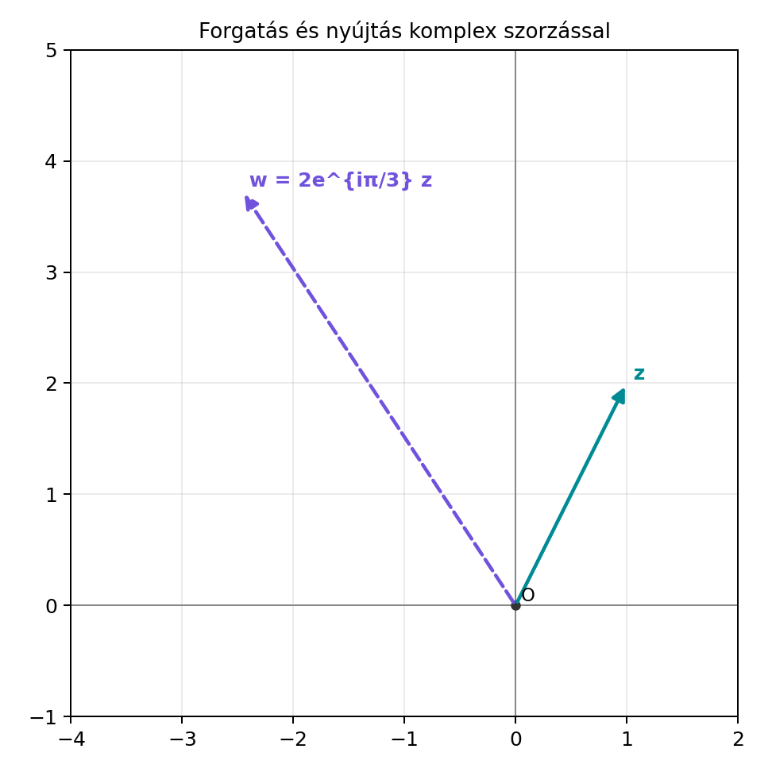
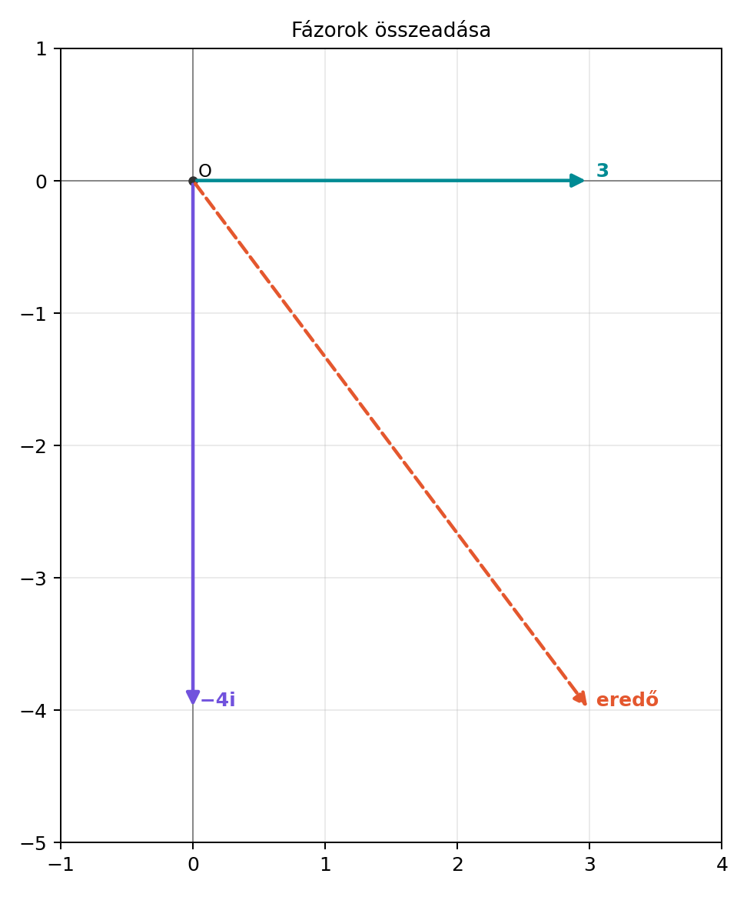

6.4 Komplex számok a gyakorlatban:
forgatás, fázorok és polinomok gyökei
6.4.1 Motiváció
A komplex számok először csupán az algebra „belső ügyének” tűnnek:
arra találták ki őket, hogy az olyan egyenleteknek, mint
,
is legyen gyökük. A valós alkalmazások azonban legalább ennyire
fontosak. Három terület különösen sokszor kerül elő: a síkbeli
forgatások és nyújtások tömör leírása, a váltakozó
áramú hálózatok fázorai, valamint a polinomok
gyökeinek teljes feltérképezése. Ez az alfejezet ezt a három
témát köti össze, és ezzel előkészíti a komplex függvénytant, a rezgések
analízisét és a parciális törtekre bontást.
6.4.2 Szemléletes kép
Képzeljük el a komplex számsíkon a
pontot, és a
komplex számmal való szorzást. A
hossza
,
irányszöge
,
így a szorzás a
vektor hosszát megkétszerezi, közben az origó körül
-kal
elforgatja. A kapott pont:

Forgatás és nyújtás komplex szorzással -
z = 1 + 2i, a szorzó 2e^{iπ/3}; w = 2e^{iπ/3} z ≈ −2,46 + 3,73i. A hossz
2-szeres, a szög 60°-kal nő.
Az ábrán jól látszik, hogy a komplex szorzás egyszerre kódolja a
skálázást és a forgatást. Ez a
geometriai tartalom a későbbi komplex leképezések alapja.
6.4.3 Forgatás és nyújtás komplex
szorzással
A Hatványozás és gyökvonás: Moivre-formula és
egységgyökök alfejezetben láttuk, hogy minden nem nulla komplex szám
felírható
trigonometrikus vagy exponenciális alakban (ahol
egyelőre a
szám jelölése), ahol
és
.
Most ezt használjuk.
Tétel. Ha
és
,
akkor
Azaz a szorzásnál az abszolút értékek összeszorzódnak, az
argumentumok pedig összeadódnak.
Az
-vel
való szorzás tisztán forgatás (hossz nem változik).
A
-vel
való szorzás
-szeres
nyújtás és
szögű forgatás.
Példa. Forgassuk el a
pontot az origó körül
-kal,
és közben nyújtsuk meg
-szeresre.
A szorzó
.
Így
Közelítőleg
.
Az ellenőrzés szerint
,
és
,
ami valóban kétszeres. A szög:
,
ehhez hozzáadva
-ot
-ot
kapunk, ami megegyezik
irányszögével.
Síkgeometriai alkalmazás. Az
,
,
pontok által meghatározott
háromszög az
csúcsnál derékszögű. Valóban:
és az
argumentuma
,
tehát az
és
vektorok szöge
.
A komplex hányados argumentuma tehát a két vektor által bezárt szöget
adja meg.
Továbbvitt eredmény. A komplex szorzással való
forgatást és nyújtást használjuk a Komplex
függvények mint leképezések alfejezetben, amikor olyan leképezéseket
vizsgálunk, mint
vagy
.
6.4.4 Fázorok: harmonikus rezgések
összeadása
A váltakozó áramú jelenségekben a mennyiségek időfüggése gyakran
alakú, ahol
az amplitúdó,
a körfrekvencia,
pedig a kezdőfázis. A komplex számok azért hasznosak, mert az
Euler-formula szerint
Definíció (fázor, angolul phasor). Az
harmonikus jelet az
komplex szám reprezentálja. Ezt nevezzük fázornak
vagy komplex amplitúdónak. A fázor hossza
,
irányszöge
;
a valós időjelet a fázornak a forgó
-vel
való szorzatának valós része adja.
A reprezentáció azért hatékony, mert az azonos körfrekvenciájú
harmonikus jelek összege is
alakú, és az eredő amplitúdó és fázis a fázorok vektori összeadásával
számítható.
Példa. Adjuk össze az
és
jeleket. Először az
-t
koszinuszos alakra írjuk:
A megfelelő fázorok:
és
.
Összegük:
Ennek abszolút értéke
,
argumentuma pedig
rad
.
Ezért
Ellenőrzés trigonometriai úton is lehetséges: a
kifejezés valóban
alakú, ahol
és
.

Fázorok összeadása - A 3 és a −4i fázor
összege 3−4i; az eredő amplitúdó 5, fázisszög ≈ −53,1° (−0,927
rad).
A fázorábrán a valós tengelyre vetített, az
szögsebességgel forgó vektor adja a pillanatértéket. Az összeadás így a
szokásos vektori paralelogramma-szabály.
Az alábbi ábra ezt a forgást egy pillanatban,
-nál
mutatja: a két fázor és eredőjük együtt forog, és az eredő valós
tengelyre vett vetülete,
,
éppen az összegjel pillanatértéke
().
Statikus változat (mint a PDF-ben)
Forgó fázorok és a pillanatérték:
;
számított értékek
Az elektrotechnikában az
helyett gyakran
jelöli a képzetes egységet, mert az
betűt az áram pillanatértékére tartják fenn. Mi a matematikai
-t
használjuk, de a képletekben szereplő
és
ugyanazt jelenti.
A cél olyan lineáris áramkörök vizsgálata, ahol a gerjesztés
szinuszos, és az áramkör már állandósult (tranziens jelenségektől
eltekintünk). A fázor-módszer szerint a feszültséget és az áramot a
következő alakban keressük:
A komplex feszültség és áram:
Az áramköri elemekre érvényes a komplex Ohm-törvény:
,
ahol
az illető elem impedanciája. Az alapvető elemek
impedanciája:
Ellenállás.
,
ezért minden
esetén
,
tehát
Az ellenálláson a feszültség és az áram fázisban van.
Induktivitás. Az induktivitáson
.
Ha
,
akkor
ezért
A feszültség
-ot
siet az áramhoz képest, mert az
szorzó
forgatást jelent.
Kapacitás. A kondenzátoron
.
Ha
,
akkor
tehát
A feszültség
-ot
késik az áramhoz képest.
Soros RLC-kör impedanciája. A soros kapcsolásban a
feszültségek összeadódnak, így
Az impedancia abszolút értéke:
a fázisszög pedig
Ha
a generátor csúcsfeszültsége, akkor az áram csúcsértéke
és az áram fázisa a feszültségéhez képest
(ha a feszültség fázisát
-nak
választjuk). Amikor
,
azaz
Tétel (az algebra alaptétele). Minden legalább
elsőfokú, komplex együtthatós
polinomnak van legalább egy komplex gyöke.
Következmény (gyöktényezős felbontás ℂ felett). Ha a
polinom
-edfokú,
akkor
ahol
a polinom komplex gyökei, multiplicitással számolva. Tehát egy
-edfokú
polinomnak pontosan
komplex gyöke van, ha minden gyököt annyiszor számolunk, amennyi a
multiplicitása.
6.4.7 Valós együtthatós polinom
valós tényezős felbontása
A gyakorlati feladatokban gyakran valós együtthatós
polinomokat kell valós tényezőkre bontani. Ehhez elég a komplex gyököket
ismerni.
Tétel. Ha a
polinom együtthatói valósak, és
gyöke
-nek,
akkor a konjugáltja,
is gyöke.
Bizonyítás. Legyen
,
ahol minden
.
Ha
,
akkor vegyük az egész egyenlet konjugáltját:
ahol kihasználtuk, hogy a valós
számokra
.
Tehát
is gyök. ∎
Következmény (valós tényezős felbontás). Minden
valós együtthatós polinom felírható valós elsőfokú és negatív
diszkriminánsú valós másodfokú tényezők szorzataként:
ahol minden
valós gyök, a másodfokú tényezők diszkriminánsára pedig
.
Valóban, a nem valós komplex gyökök párokban jönnek: ha
gyök, akkor
is. Az ezekhez tartozó lineáris tényezők szorzata:
ami valós együtthatós másodfokú, és mivel
nem valós, diszkriminánsa negatív.
Példa. Bontsuk valós tényezőkre a
polinomot. Komplex gyökei:
,
tehát a gyökök:
azaz
,
,
,
.
A konjugált párok:
és
.
Az első párból:
Minden harmonikus jelet írj fel
alakban. Ha szükséges, használd a
azonosságot.
Képezd hozzá a fázort:
.
Végezd el a műveletet a fázorokkal; összegzésnél add össze a komplex
számokat, áramköri számításnál alkalmazz impedanciákat.
Az eredő valós jel:
.
Ellenőrizd az amplitúdót és a fázisszöget egy konkrét
értéknél.
6.4.8.2 Valós tényezős felbontás
receptje
Keresd meg a polinom összes komplex gyökét (pl. másodfokú
megoldóképlet, gyökvonás).
A valós gyökökhöz rendelj
tényezőt.
A nem valós gyököket párosítsd a konjugáltjukkal.
Minden
párhoz készítsd el az
másodfokú tényezőt.
A főegyütthatóval szorozz, és ellenőrizd a felbontást néhány
-értéken.
6.4.9 Valós életbeli alkalmazás:
hangszóró-keresztváltó szűrő és az 50 Hz-es hálózat
6.4.9.1 RC aluláteresztő szűrő mint
mélysugárzó-ág
A hangszóró-keresztváltó hálózatokban különböző szűrők irányítják a
mély- és magashangokat a megfelelő hangszóróhoz. Tekintsünk egy egyszerű
RC aluláteresztő szűrőt, amely a mélysugárzót hajtja
meg. Legyen a soros ellenállás
,
a kondenzátor
F,
és a bemeneti feszültség
.
A kapacitás impedanciája
,
így a feszültségosztó képlet szerint a kimenet:
Az átvitel amplitúdója:
a fázistolása pedig
(a kimenet késik a bemenethez képest).
Válasszuk az
kHz frekvenciát. Ekkor
rad/s, és
Ezért
A kapott szám azt jelenti, hogy
kHz-en a jel amplitúdója az eredeti
-ára
csökken, és körülbelül
-ot
késik. Alacsony frekvencián, például
Hz-en,
,
így
,
tehát a mély hangok gyakorlatilag változatlanul átjutnak. Magas
frekvencián, például
kHz-en,
,
így
;
ez a mélysugárzó-ág tehát valóban aluláteresztőként viselkedik. Azt a
frekvenciát, ahol
,
azaz
Hz-et, vágási frekvenciának hívjuk; ennél az amplitúdó
-szeres.
6.4.9.2 50 Hz-es hálózat induktív
terheléssel
Egy másik tipikus példa az
Hz-es hálózati feszültségre kapcsolt induktív fogyasztó, például egy
motor. Legyen a feszültség effektív értéke
V, a terhelést pedig soros
ellenállás és
mH induktivitás modellezze. Az
rad/s körfrekvencián az impedancia:
Abszolút értéke
,
fázisszöge
.
Az áram effektív értéke:
és az áram
-ot
késik a feszültséghez képest, mert az impedancia
fázisszöge pozitív. A csúcsfeszültség
V, az áram csúcsa pedig
A.
A fázor-módszer tehát egyetlen komplex osztással megadja mind az
áramerősséget, mind a fáziskésést. A modell korlátai: lineáris elemeket
és tiszta szinuszos állandósult állapotot feltételez; a valódi
motoroknál az induktivitás és az ellenállás frekvenciafüggő, és
telítődés is felléphet. A teljesítménytényező és a háromfázisú
rendszerek külön tárgyalást igényelnek, itt nem foglalkozunk velük.
6.4.10 Tipikus hibák
1. A fázor és a pillanatérték keverése. A
fázor nem maga a jel, hanem a jel komplex amplitúdója. A pillanatértéket
a
adja. Gyakori hiba a
elhagyása vagy az
tényező elfelejtése. A helyes út: mindig írd ki a valós részt, amikor
időfüggvényt adsz meg.
2. Az impedancia képzetes részének előjele. A
kapacitás impedanciája
,
nem
.
Ha az előjelet elrontjuk, a fázistolás iránya megfordul: kapacitív
körben az áram siet, induktívban késik. A levezetésből könnyen
ellenőrizhető: a kondenzátoron az áram
-ot
siet a feszültséghez képest.
3. A valós tényezős felbontásban a kereszt tag
előjele. A
szorzat eredménye
,
nem
.
A hibás előjel a polinom középső tagjánál azonnal kiderül, ha
behelyettesítünk egy konkrét értéket.
4. Forgatásnál a nyújtás elhagyása. Ha a szorzó
,
akkor a kép hossza
-szeres
lesz. A tisztán forgatás csak az
eset, például
.
A
szorzónál a hossz is változik.
6.4.11 Önellenőrzés
Igaz-e, hogy az
-vel
való szorzás
-os
forgatást jelent, és a hossz változatlan marad?
Az
jel fázora
vagy
?
Soros RLC-körben mikor minimális az impedancia, és mekkora akkor az
áram?
Igaz-e, hogy minden valós együtthatós polinomnak minden komplex
gyöke konjugált párban jelenik meg?
Az
szorzat
.
Igaz-e?
Egy RC aluláteresztő szűrőn a kimeneti feszültség mindig ugyanakkora
fázisszögű, mint a bemeneti?
6.4.12 Feladatok
1. feladat (A). Számítsd ki a
hatványt, és add meg algebrai alakban.
2. feladat (A). Forgasd el a
pontot az
pont körül
-kal
(az óramutató járásával ellentétes irányban). Add meg a kép
koordinátáit. (Útmutatás:
,
ahol
a forgásközéppont.)
3. feladat (B). Add össze a fázorokat:
és
.
Mekkora az eredő amplitúdó és fázis?
4. feladat (B). Soros RLC-kör:
,
H,
F,
Hz,
V. Számítsd ki az impedanciát, az áram csúcsértékét és a
fázistolást.
5. feladat (C). Bizonyítsd be, hogy ha a valós
együtthatós
polinomnak
gyöke, akkor
is gyöke. Ennek felhasználásával vezesd le, hogy a
()
konjugált párhoz tartozó valós másodfokú tényező
.
6. feladat (D). Egy hangszóró-keresztváltó RC
aluláteresztő szűrőben
és
F.
A bemeneti jel
kHz frekvenciájú. Számítsd ki az átvitel amplitúdóját és a fázistolást.
Hány százalékra csökken a jel amplitúdója?
6.4.13 Megoldások
6.4.13.1 Önellenőrzés –
válaszok
Igen, mert
és
.
,
mert a fázis negatív.
Amikor
,
azaz
;
ekkor
,
az áram maximális.
Igen, a konjugálásból adódóan minden nem valós gyök párban van.
Igen,
.
Nem, a fázistolás
,
ami negatív, tehát a kimenet késik.
6.4.13.2 1. feladat megoldása
mert
.
Algebrai alak:
.
6.4.13.3 2. feladat megoldása
A forgásközéppont
.
A
-os
forgatás az
-vel
való szorzás, ezért
Ellenőrzés:
,
és
,
,
az eltérés valóban
.
6.4.13.4 3. feladat megoldása
A fázorok:
és
.
Összegük:
Az amplitúdó:
A fázisszög:
Tehát az eredő jel
.
6.4.13.5 4. feladat megoldása
rad/s.
,
.
Így
.
Az áram csúcsa
A. A fázistolás
,
tehát az áram
-ot
siet a feszültséghez képest. (A kör közel van a rezonanciához:
,
ezért
.)
6.4.13.6 5. feladat megoldása
Legyen
,
ahol
.
Ha
,
akkor
mert a valós
számok konjugáltja önmaga. Tehát
is gyök. Ha
és
,
akkor
A feladat állítása ezzel bizonyítva.
6.4.13.7 6. feladat megoldása
rad/s,
.
Az átvitel:
A fázistolás:
A jel amplitúdója tehát körülbelül
-ra
csökken, és
-ot
késik.
A klasszikus eredmények (komplex forgatás, fázorok, impedancia,
algebra alaptétele) a standard egyetemi tananyag stabil részei; konkrét
mért adatot nem állítottunk. A felsorolt URL-ek kiindulópontok, nem
ellenőrzött források; a Python-API-k és mérési adatok külön ellenőrzést
igényelnének, ha ilyenek szerepelnének.